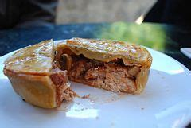

Tasty Meat Pie

This meat pie recipe with ground beef has been in the family for years. It is good, and my kids love it.
Ingredients
- 2 (14.1 ounce ) packages double-crust pie
pastry, thawed, divided
- 1 pound ground beef
- 1 onion, chopped
- 1 (10.5 ounce) can condensed vegetable
beef soup, undiluted
-
1 (10.5 ounce) can condensed cream of mushroom
soup, undiluted
- 3 potatoes, peeled and cubed
- 4 carrots, sliced
- ¼ teaspoon salt
- ⅛ teaspoon black pepper
Steps
-
Preheat the oven to 350 degrees F (175 degrees C.) Press a pie pastry into the
bottom of each of two 9-inch pie plates.
-
In a large skillet, cook beef and onion until meat is no longer pink, 7 to 9
minutes. Remove from the heat and drain off excess fat. Stir in both condensed
soups, then add potatoes and carrots. Season with salt and pepper.
-
Divide filling between the bottom pie crusts. Cover each pie with a remaining
pastry and seal the edges. Cut slits in the top to allow steam to escape.
- Bake in the preheated oven until golden brown, 45 to 50 minutes. Let stand on a
wire rack for 15 minutes before serving.